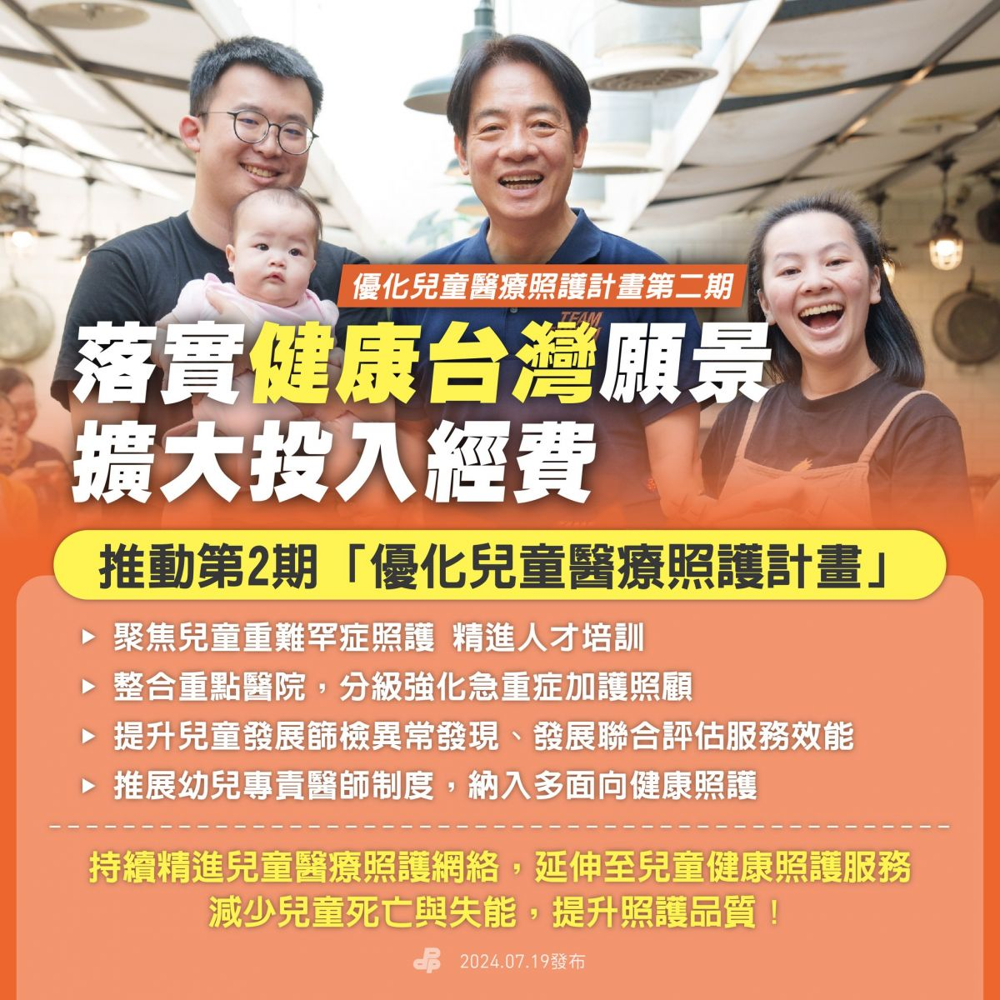
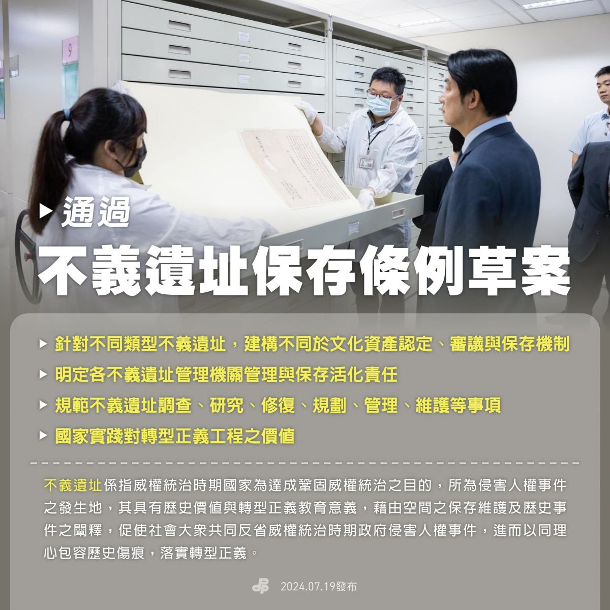

2024-08-02 政策
行動創新 0719施政重點報你知！



民進黨政府以創新思維積極行動，努力為台灣做更多事卓榮泰 院長所帶領的 #行動創新 行政團隊不斷推出多項福國利民的政策：
「0-6歲國家一起養2.0」
政府將打造更友善育兒的環境，使托育體系更平價、優質、普及！目前全國已經有60萬個0-6歲的托育名額，今年一月起提高公托、準公托補助分別為7,000元及1萬3000元。
教育部從今年寒假開始，實施平日延長照顧及寒暑假加托服務，幫助家長寒暑假托育、臨時托育需求，今年暑假，已有超過9成公立幼兒園辦理暑假加托服務。不僅如此，勞動部也從今年5月起開始試辦彈性育嬰留職停薪，讓家長可以單日、5日或7日為單位申請育嬰假，讓政策更貼近家長照顧孩子的需求！
推動「第2期 優化兒童醫療照護計畫」
為維護新生兒及兒童的生命健康，政府將強化新生兒及兒童的整體醫療照護，提升兒童發展篩檢、初級照護及重難罕症照護，並加強醫事人才培訓，實現「健康台灣」願景！
通過「不義遺址保存條例」草案
台灣曾歷經長達38年的戒嚴統治，在這段期間，有許多國家侵犯人權的發生地。對不義遺址的重視，是瞭解歷史真相、實踐轉型正義的重要工程，也是深化民主的具體行動。